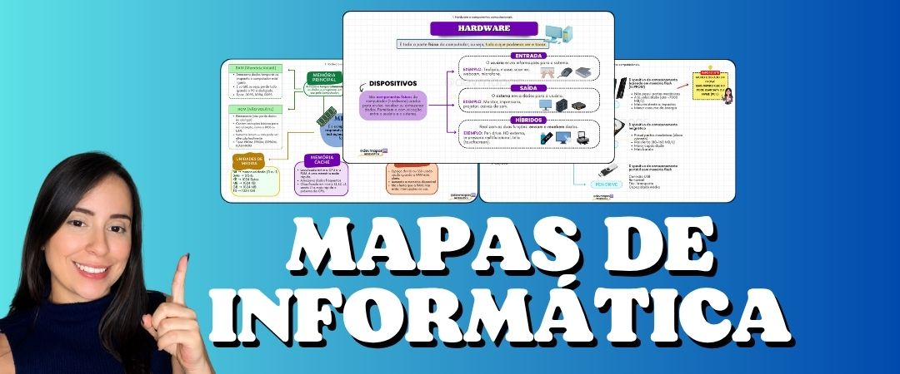
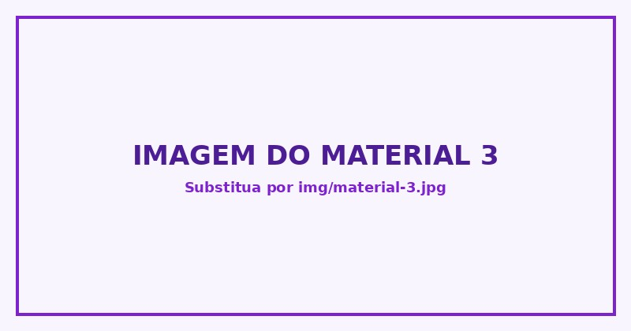

Mikaelly Dias
Informática para concursos
Aqui você encontra materiais de Informática feitos para facilitar seus estudos, acelerar suas revisões e ajudar você a chegar mais preparado para a prova.
Clique abaixo, escolha o material ideal para você e continue avançando na sua preparação. 👇

